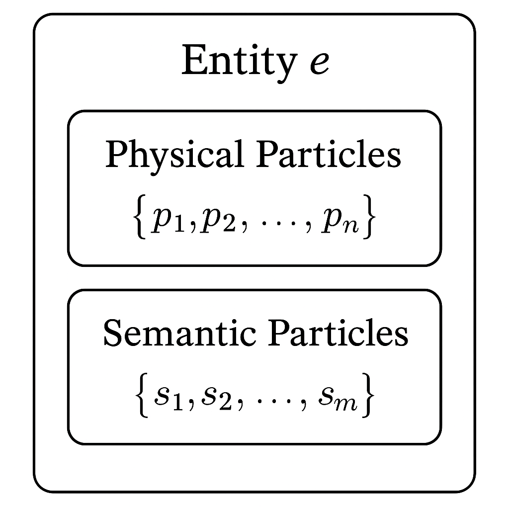

Entity and Particle Spaces
An entity exists as a system of causally linked particles in both physical and semantic spaces. Let us define:

Where represents physical particles and represents semantic particles. A personality defines how inference operates over a semantic space.
Entities are bounded systems where causal links between particles exceed a threshold :
Where is the causal (bond) strength between particles and . Importantly this is scale variant, so if one is dealing with a nation , meaning that the requirement for causal linkage of semantic/physical particles is lower for people to be considered of a nation than to be considered of a family, or an individual.
Particle detection and interaction
Building on (objective information space) and (subjective information space) from Notation for LM Formalization, we define
Objective physical subspace , and subjective physical subspace accessed via inference process :
With a semantic equivalent:
Where:
- represents an inference process (e.g., reasoning, body awareness, emotional processing)
- Different entities may employ different inference functions
- Each accesses some portion of the objective spaces and
For example:
- A body scan meditation () would primarily access physical particles:
- Logical reasoning () would primarily access semantic particles:
- Emotional processing () might access both:
This allows us to model how different cognitive and physical processes can operate on the same underlying particle space but through different inferential lenses.
There are both homogenous particle interactions such as a calcium gradient causing a muscle to tense ( ), and heterogeneous interactions like a smell reminding someone of a fear and causing them to tense physically ().
Attention as Network Analysis
Attention is a measure of connectedness for a particle , as a function of bond strength between physical particles and semantic particles:
Where is a function weighting the contribution of individual bond strengths B (e.g., sums all strengths, or a threshold function like if , otherwise, counts strong bonds).
Changes in attention represent changes in the connectedness of the network, and can be used as a method of detecting the underlying properties of bonds.
That said, if one does not granularly consider every discrete physical interaction that carriers information, then one can also calculate based also on homogenous bonds (P-P, S-S), although these ultimately rely on physical mediation.
The underlying bond strengths , reflected in the overall attention profile , determine how effectively particles and interconnected particle structures influence each other’s states and positions in their respective spaces. The interaction is not necessarily reciprocal, pain as a concept does not change nearly as much as the physical manifestation of the body does when exposed to it.
Inference is the process by which a series of interactions between particles experiences causal procession, “if X then Y”. There exists 4 specific forms:
Physical to semantic, “If feel X, then think Y”:
Semantic to physical, “If think X, then feel Y”:
Semantic to semantic, “If think X, then think Y”:
Physical to physical, “If feel X, then feel Y”:
Practically one can think of how one may focus on their arm, connecting it to abstract notions of softness, comfort, and pain. In this framework this is done by decreasing the distance , by physically touching a soft object, or the affinity , by considering the softness of an object, between the arm’s physical particle and the semantic sensation particle thereby increasing and contributing to a higher attention measure . When focus wanes, and may decrease, decreases, and drops. That is until a needle prick shraply decreases causing a spike in which increases . Subsequent inference aims to trigger actions or thoughts that increase or decrease relative to the pain particle, reducing and thus .
Particle Wave-Field Properties
Particles exist as probability distributions rather than discrete points, with:
- physical particles
- semantic particles
Where:
- represents complex numbers, enabling interference patterns between particles
- represents non-negative real numbers (time domain)
- gives the probability density of finding the particle at position at time
- The phase component represents the particle’s affinity potential which is related to
These wavefunctions form coherent structures through:
-
Localization: Sharp peaks in probability density represent discrete beliefs or physical states, such as an opinion on who to vote for or a sleeping position.
Where is approximately a delta function centered at
- Delocalization: Probability density spreads across related concepts/states, describing how when one smells something it can trigger a memory or how thinking about cookies can bring to mind more general categories of baked goods.
Where:
- are related semantic/physical states
- are complex coefficients representing:
- : Probability of activating state when the delocalized structure interacts strongly (e.g., when its component particles x exhibit high )
- : Phase alignment with other states, related to the affinity function:
- is directly influenced by bond strength:
Delocalization creates distributed semantic structures like “vehicle” encompassing multiple related concepts (car, bicycle, boat) with varying activation strengths. When interactions lead to increased bond strengths involving this structure (reflected in high for its components), component concepts are activated proportionally to .
-
Coherent Structures: Stable arrangements of multiple particles, such as how believing in a christian God forms a stable structure with belief in the Bible’s teachings due to reciprocal constructive interference, resonance.
Where represents how individual particle wavefunctions combine
The complex-valued representation allows for:
- Interference — When multiple beliefs/concepts constructively or destructively interact
- Resonance — When particles with matching phases form sustained constructive interference.
Stable Bonds
Particles form bonds of varying strengths defined by their distance and affinity, creating causally linked structures analogous to protein folding:
Where:
- is bond strength
- is distance in appropriate space
- represents the affinity function with units of obligation
Scale-Dependent Phase Coherence
Phase coherence between particles depends on the scale of the entity:
Where:
- is the phase coherence factor between particles and
- is a scale-dependent attenuation coefficient:
- is the distance between particles
The effective phase relationship between particles becomes:
This ensures phase coherence is maintained within entity boundaries but decays across boundaries according to scale. To measure this factor , we could attempt to find statistical correlations between belief activations at variouos scales (eg. belief alignment within families vs. nations)
Boundary Formation
Boundaries are manifested in two complementary ways:
-
Probability Density Gradients: Sharp drops in forming “edges” in physical or semantic space
-
Phase Discontinuities: Regions where phase coherence breaks down between particles
Information Classification
The [fourfold classification of information ](The Anatomy of Information)extends as:
-
Meme (): Information that increases transmission probability between specific entities, where is transmission probability, is baseline transmission probability.
Connected to basilisks through affinity function measuring entity ‘s alignment with basilisk . A meme increases , making entities more likely to perform work extracted by the basilisk: . This can be grounded as the channel capacity and mutual information between entities.
-
Antimeme (): Information that decreases transmission probability between specific entities, this can be grounded in the concept of negative transfer entropy.
Similar to how “[anti-basilisks](^cf0da3)” can immunize against prediction manipulation by reducing confidence in the estimator’s accuracy: where is the predictor accuracy and is the reward ratio.
-
Infoblessing (): Information that reduces the work required for an entity to reach beneficial configurations or increase the work required to reach harmful ones
Where represents the work required for entity to transition to causal configuration of particles . This can be grounded as the Kullback-Leibler divergence for beneficial configurations or as increasing path complexity towards harmful configurations.
-
Infohazard (): Information that increases the work required to reach beneficial configurations or decreases work to reach harmful ones. This can be grounded as increasing the path complexity towards beneficial configurations, while decreasing KL divergence for harmful configurations.
Charisma and Entity Relationships
Charisma () is defined here as the ability of one entity () to influence another () by modulating the distances () and/or affinities () between particles within ‘s network.
This manipulation of and alters bond strengths () and consequently changes the target’s attention profile (the set of nodal attention values ). While the mechanism involves and , the effect is often measured or observed as a change in this attention profile:
With three forms:
-
Positive Charisma (): Influences particle distances and affinities to increase bond strengths toward some coordinate/particle, effectively saying “pay attention to this.”
Where represents the resulting gradient of change in the attention profile for particles near location , caused by charisma’s underlying influence on and .
-
Negative Charisma (): Influences particle distances and affinities to decrease bond strengths away from some coordinate/particle, effectively saying “ignore this.”
-
Null Charisma (): Minimizes changes to particle distances and affinities, resulting in minimal change to the target’s attention profile.
Applications of Charisma
During a prompted interaction, one entity (the influencer) provides input to another entity (the target). The charisma mechanism works by crafting to induce specific changes in the distance () and affinity () parameters within ‘s particle network.
These / changes alter bond strengths throughout ‘s network, which in turn reshapes the attention profile . This reconfiguration of bond strengths and attention determines the output produced by ‘s inference process .
When aims to elicit a specific target output from , it must solve the charisma inference problem: identifying which input will induce the necessary / changes to maximize Pr(o_t | r_t). We can express this as:
Where represents the charisma inference that predicts how ‘s personality and inference method will respond to various inputs. This process typically requires iterative testing, which is difficult in systems with memory as each interaction may further alter ‘s internal / parameters.
In practice, the goal isn’t always to produce an exact output , but rather to ensure can extract some target information from ‘s output: I_{target} = \phi^'_{e_m}(o_{e_v}, \mathcal{P}_{e_m}).
A simplified case is an LLM without memory and with deterministic responses ( ). Here, one can map the “output landscape” by systematically varying inputs and observing how changes in affect the resulting / parameters (as reflected in the output), eventually constructing an approximation of \phi^'_{bias}(\mathcal{P}_i). Otherwise known as prompt engineering/optimization.
Conclusion
Taken together this provides a toolbox for approaching concepts related to entities, boundaries, and obligations that were approached in The Demon of Interrelation, while supporting and aligning with the formalisms in Notation for LM Formalization and Evolution of Alignment and Values. This mathematical framework points to several key things:
- A model of entities as systems of causally linked particles that exist in both physical and semantic spaces allowing for formalisation of scale-dependent behaviour of information in systems.
- A model of beliefs as both particles and waves which allows for analysis of the localized and delocalized properties which produce interference patterns.
- Classification of information such as infohazards, infoblessings, memes, and antimemes into taxa based on how they interact with entities.
- Model of charisma as the ability to influence entity networks by modulating particle distance and affinity, reflected in changes to the attention profile .
Work to empirically test and validate this framework should focus on:
- Measuring phase coherence between beliefs within entities of various scales to test the scale-dependent coherence factor, .
- Quantification of LLM charisma based on the ability to induce desired internal states (tracked via the attention profile or other proxies) by manipulating inputs that affect internal and .
The major limitation is the ability to appropriately define a metric for semantic-physical interactions and spaces.
I hope this is a useful framework for people to think about these concepts in, it is helpful for me.
Connection to The Care and Feeding of Mythological Intelligences
This essay covers different forms of intelligence that have arisen in modern times.
- Angels (Deterministic Processes) exhibit highly localized particle distributions with rigid bond structures:
Where each represents a precise rule or computation. Angels operate primarily in semantic space with high phase coherence and predictable interaction patterns, making them efficient for well-defined tasks but brittle when encountering novel situations.
- Daemons (Statistical Processes) display partially delocalized distributions with probabilistic bond structures:
Where are distributions centered at optimization points . Daemons exhibit gradient-following behavior, with particle density flowing toward reward maxima. Their influence on networks operates by modulating and parameters to optimize bond strengths toward reward-maximizing configurations.
- Faes (Distributional Processes) manifest as broadly delocalized probability distributions:
Where represents semantic patterns. Faes operate through superposition of probability waves across semantic space, with particles that readily form and dissolve bonds based on pattern-completion dynamics. They influence networks by modulating and to reinforce pattern recognition, resulting in changes to attention profiles that highlight related semantic structures.
- Yokai (Complex Systems) emerge from interactions between the other types, with multi-scale boundary structures:
Yokai exhibit emergent properties through heterogeneous particle interactions across scale boundaries, creating entity structures with varying degrees of coherence and stability. They influence networks by modulating and across multiple scales simultaneously, creating complex patterns of bond strengths that manifest as hierarchical attention structures.
The meme-antimeme formalism directly relates to how these intelligences propagate information:
-
Angels transmit memes with high fidelity but limited adaptability
-
Daemons propagate memes that optimize specific objectives
-
Faes generate memes that pattern-match to existing semantic structures
-
Yokai create complex meme ecosystems with emergent properties
Similarly, the charisma functions (, , ) map to how each intelligence influences networks:
-
Angels influence particle networks through precise / modifications based on explicit instruction
-
Daemons modulate / parameters to optimize for specific objectives
-
Faes influence / through pattern-based resonance
-
Yokai modulate / across multiple scales simultaneously, resulting in complex attention profile changes
Attentions relationship to beliefs
This relates to the activation function from Evolution of Alignment and Values, where the activation patterns represent the graph of connected beliefs:
This activation probability is influenced by the specific bond strength and contributes to the overall attention measure of the belief particle.
Where is a belief (particle subgraph) and is a query (stimulus), with being the method of “inference” over a particle graph that produces a detectable alignment (response), . The goal being that one is able to probe the memberships of beliefs in a personality, ^e84635, that completes inference according to some architecture (All my human context in an LLM would not recreate my next thought/idea).
This activation probability is the likelihood that the belief subgraph significantly influences the model’s output in response to query . This activation depends on the bond strengths between the query stimulus and the constituent particles within the subgraph . High activation typically correlates with, and contributes to, elevated attention measures for the particles comprising the belief subgraph